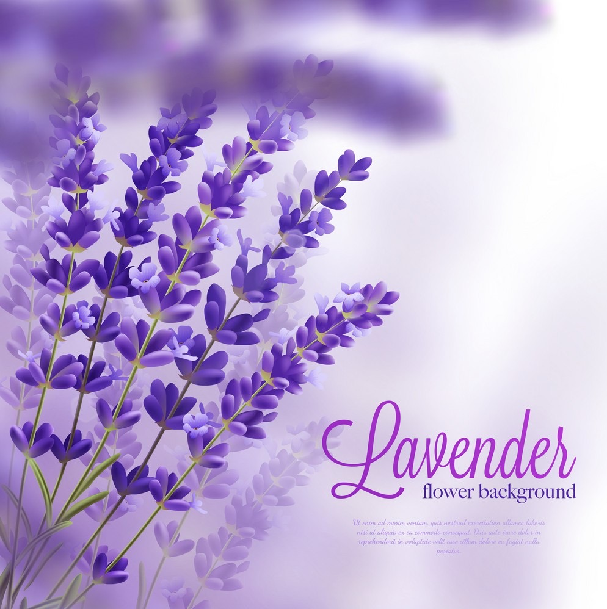
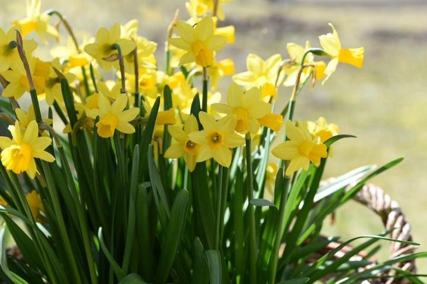

Purple
Click the purple flowers image to read more...
Yellow
Click the yellow flowers image to read more...
Blue
Clicke the blue flowers image to read more...

Flowers, whether in a bouqet or growing in a pot or flower bed, always have a special
way of lifting our spirits. This is due in part to the principles of color therapy, an
alternative therapy grounded in the idea that colors have powerful effects on our moods. You
can combine the wellness benefits of gardening, with some color therapy, to get the best of
both worlds! Add a few of these colorful flowers to your Des Moines garden to make you, and
your neighbors, smile.
According to the principles of color therapy, certain colors tend to specific emotional
responses in people. Blues are claiming, greens are tranquil and grounding, yellows are
cheerful, red is passionate and remantic, pink promotes kindness and genleness, and purple
inspires crativity and mystery.
PurpleClick the purple flowers image to read more... |
 |
|  |
YellowClick the yellow flowers image to read more... |
BlueClicke the blue flowers image to read more... |
|